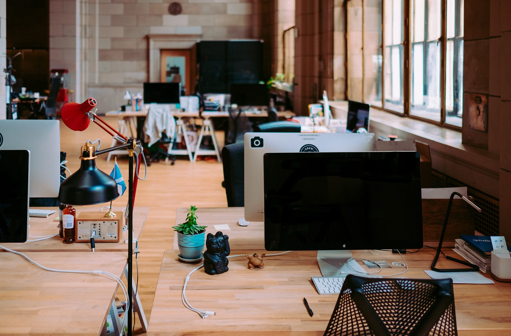

About Me
Designer, Developer & Some Other Things

I've worked on many projects from web design to ui/ux design, branding to print design and illustration to logo design.
My name is Kenny, and I am a designer and front-end developer. I’ve worked with many different companies, from startups to corporate giants, to help tell their stories and promote their businesses. A few of my strengths include branding, responsive web design/development, and illustration. Outside of work, you can find me doodling ideas in a sketchbook and practicing new skills such as animation or app development.
Experience
- Jr. Designer, Good2bSocial
Nov 2017 - December 2018 | New York, NY
Collaborated with account managers in redesign legal and medical firms’ websites. I created wireframes, user flows, and designs for small to large-scale websites from start to finish to be interactive, user-friendly, and SEO compliant. Mocked up prototypes for tested and gave presentations to clients. Determined the number of page templates to adhere to the development budget and tested for QA. - Freelance Graphic & Web Designer
Sept 2011 - Present | New York, NY
Worked as a freelance designer for multiple projects (web development, brand identity, illustrations, and visual design), clients include CSRI, Knewtown & SalesGraphics. - Lead Graphic & Web Designer, Transit Wireless
Oct 2015 - Aug 2017 | New York, NY
I redesigned the company’s branding using illustrations for infographics, mockups for Wi-Fi platform design and web development for Transit Wireless’s new website. The newly designed brand identity including new external & internal company logos, branding templates, promotional materials, websites, and social media accounts. Created graphics, slide templates and PPT materials for RFP/board documents, external client presentations and collateral for use by all departments. - Creative Design Intern, MKTG Inc.
Jun 2015 - Aug 2015 | New York, NY
Assisted the in-house Graphic Designers with the production of marketing collateral for print and digital mediums in the form of layout design, photo manipulation, and signage. Developed a promotional advertisement for upcoming events and experiences that the client hosted. Collaborated with designers to develop novel ideas for unique and new experiences for our clients. - Creative Design Intern, nivo.
Nov 2014 - Mar 2015 | New York, NY
Worked with the Marketing & Development Team to design new user interfaces for a mobile product to be released on both Apple & Google Play stores. Designed new interfaces, including a new library and call-to-actions. Conducted research to establish business and user requirements, and delivered design specs for engineers to implement.
Education
- School of Visual Arts
Sept 2018 - Present | New York, NY
Currenlty pursuing a Master's in Interaction Design - Johnson & Wales University
Sept 2010 - May 2014 | Providence, RI
Graduated with the class of 2014 with a Bachelor of Science degree in Graphic Design & Digital Media | Print Production Concentration | Cum Laude